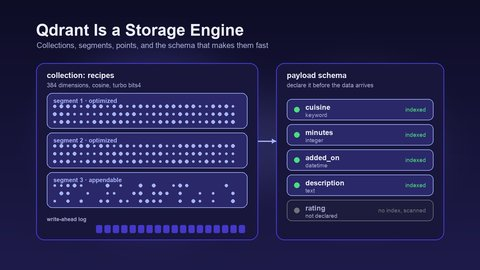
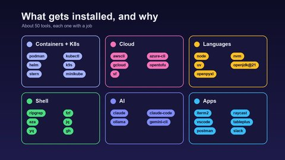

Qdrant Is a Storage Engine
Qdrant accepts anything you send by design. Power users who set the schema first get faster searches and filters that return what they expect.
Search Engineer
I'm a search engineer who likes to understand how things work under the hood, from search engine internals to the Qdrant storage engine and the Rust code behind it.
I have spent over 10 years working on search and information retrieval, with a lot of hands-on time in distributed systems, benchmarking, and search engine internals. Along the way I have learned that the hard problems are rarely the ones in the documentation. They are the problem a user describes, the default nobody questions, and the internals nobody explains.
I now work on vector search at Qdrant, where I am digging into how the storage engine works, from collections and segments to the Rust code that runs it. A big part of my job is helping people turn the problem they describe into the problem they actually have. This site is where I write down what I learn, usually as long form explanations that I wish I had found when I started.

Qdrant accepts anything you send by design. Power users who set the schema first get faster searches and filters that return what they expect.

A tour of the roughly 57 tools in my mac-setup repo: what each group is for, and why each one earned a place on the list.
How one repo keeps a Mac development environment reproducible: one command, one package list, and a verify step that catches drift.